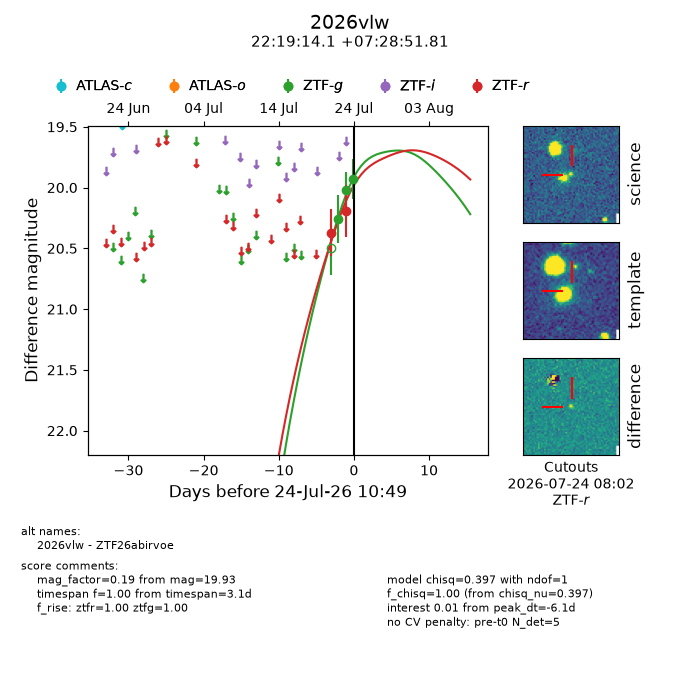
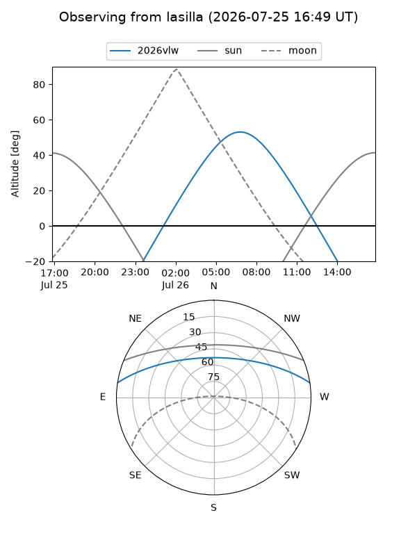
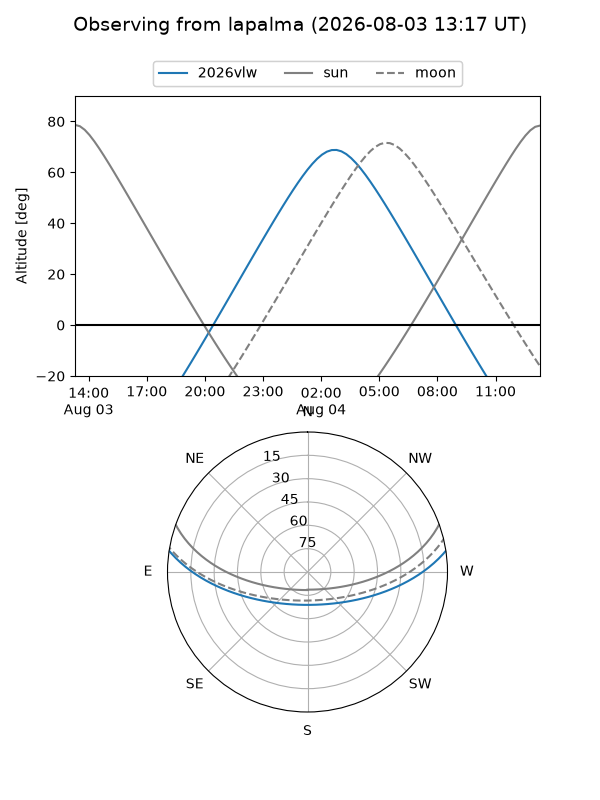
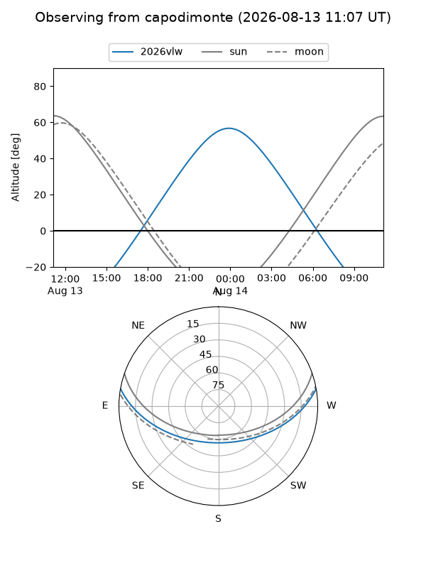
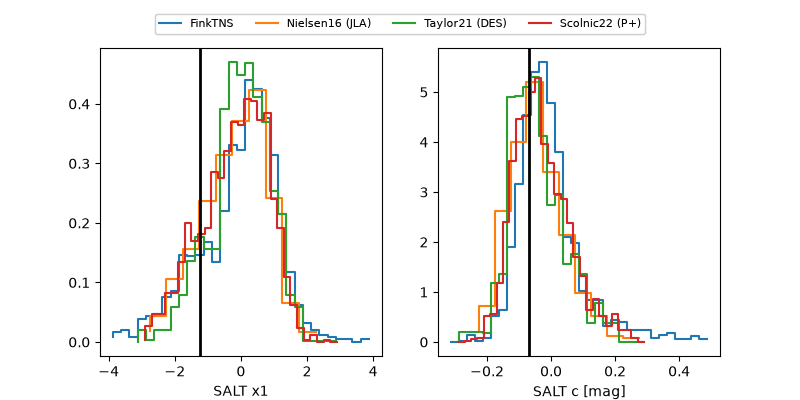

2026vlw
Target 2026vlw at 2026-07-24 10:51
Aliases and brokers:
FINK-ZTF: ztf.fink-portal.org/ZTF26abirvoe
Lasair-ZTF: lasair-ztf.lsst.ac.uk/objects/ZTF26abirvoe
ALeRCE-ZTF: alerce.online/object/ZTF26abirvoe
YSE-PZ: ziggy.ucolick.org/yse/transient_detail/2026vlw
TNS name: wis-tns.org/object/2026vlw
Direct TNS query: direct search
alt names
ZTF26abirvoe (ztf,fink_ztf)
2026vlw (tns,yse)
Coordinates:
equatorial (ra, dec) = 334.8086,+7.48106
equatorial (HMS+DMS) = 22:19:14.06,+07:28:51.81
galactic (l, b) = (70.6065,-39.45704)
Flags:
TNS type: nan
peak dt: -6.1
Photometry:
last ztfg=19.93, ztfr=20.19
3 ztfg, 2 ztfr detections
Lightcurve

Visibility



Additional plots
